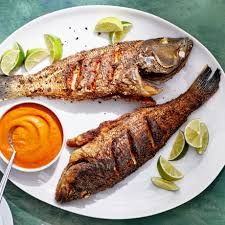

Fried Fish

For this fried fish, whip up a regular beer batter
and add a final spicy, dry dredge to create a truly crispy dish.
Ingredients
- 1 1 / 2 cup of beer
- 1 cup all purpose flour
- 1 large egg
- 1 teaspoon of garlic powder
- 1 / 2 teaspoon of salt
- 1 / 2 teaspoon of ground black pepper
- 1 lb cod fillets
- 2 cups crushed cornflake crumbs
- 1 teaspoon cajun seasoning
- 1 quart oil for frying
Directions
- Gather all ingredients
- Beat together beer, flour, egg, garlic powder,
salt, and pepper in a medium bowl until smooth.
- Add cod fillets; stir gently until well coated.
- Mix together cornflake crumbs and Cajun seasoning
in a separate medium bowl until well combined.
- Dip cod in cornflake mixture to thoroughly coat all sides.
- Heat oil in a large, heavy skillet or deep fryer to 365 degrees F (185 degrees C). Fry cod in hot oil until golden
brown and flesh is easily flaked with a fork. Drain on a paper towel-lined plate.
Home